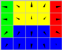
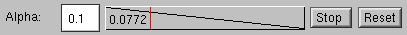
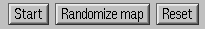

More information about data set visualization demo
The controls
Here are some more detailed instructions for the second demo:
Input data classes
The four coloured "pie" shapes on the left define the input classes.
There are four classes represented by the colours red, yellow, green
and blue. In each pie the sector represents the distribution of
vectors that the class produces. All pies produce random vectors that
are evenly distributed within the sector shown in the pie. The pies
can be edited with the mouse in two ways: dragging the mouse near the
center of the pie rotates the whole sector. Using the mouse near the
edge of the circle changes the 'width' of the sector.
Proportions of classes
The vertical bar next to the pies sets the relative proportions of the
four classes in the input data. Initially the input vectors are
distributed equally among all classes. You can edit the proportions with
the mouse:
press down the mouse button to grab hold of the nearest color border,
then move the border where you want with the mouse.
The red area corresponds to the red
pie on the left, etc.
The map

The area on the right is the self-organizing map. The map consists of
20 map units organized as a 5x4 unit grid (rectangular topology). The
map is taught at the rate of 20 iterations per second and the map is
classified and redisplayed once a second. In the classification, the
background color of the units are set to the color of the input class
they are closest to.
Each map unit contains a two-dimensional model vector whose components
are interpreted as two coordinates, x and y.
Each map unit is represented by an arrow that points from the
coordinates [0,0] to coordinates [x,y] stored in the
model vector. The range of the coordinates is from -1 to 1.
The background color of the map unit tells which input class it
represents the best (see the pies on the left). The model vectors
in the map units (the black arrows) can be edited with the mouse.
Alpha/radius controls

Below the pies and the map there is the control panel that controls
the alpha (learning rate) and neighborhood radius
parameters of the algorithm. The upper row controls alpha and
the lower controls radius. They both work in the same way: On
the left the text field shows the initial value of the parameter which
can be changed. Simply enter the new value and press return. The
next display shows what the value of the parameter is relative to the
starting and the ending values. The number displayed shows the actual
value of the parameter. The red vertical line shows the position (use
mouse to change its position). Alpha runs from the initial value to
zero and radius runs from the initial value to 1. By default, when
the teaching is in progress, the alpha and radius parameters decrease
over time. You can stop them to constant value with the STOP
button. To set it moving again, press the button again (it should read
START). RESET resets the value of the parameter to the initial value
(and moves the red indicator to the initial, leftmost position).
Main controls

Finally, the control panel in the bottom is used to start and stop
teaching, randomize the map and to reset the values. Press START to
start teaching the map, press it again to stop. Pressing the
RANDOMIZE MAP button initializes the map to random values. RESET
resets the alpha and radius parameters described above.